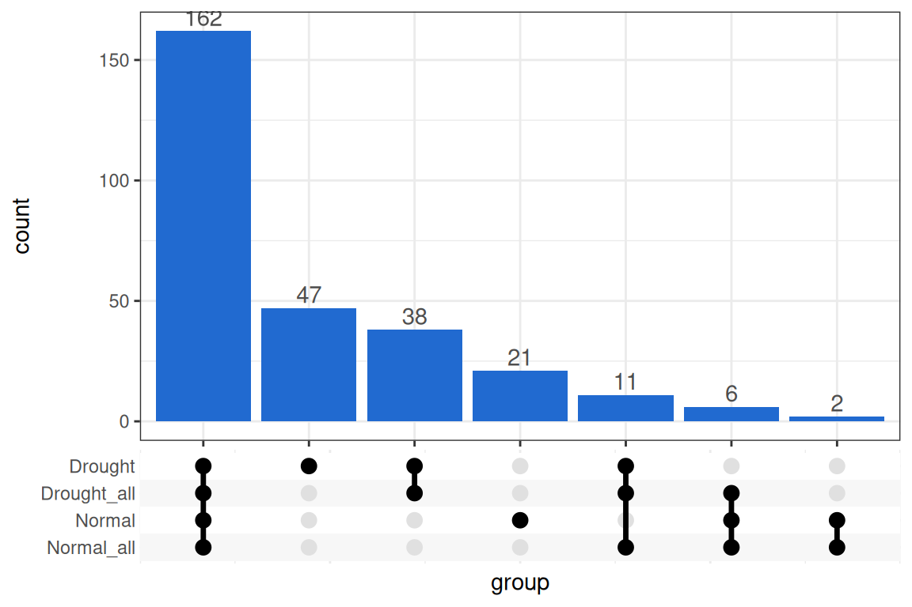
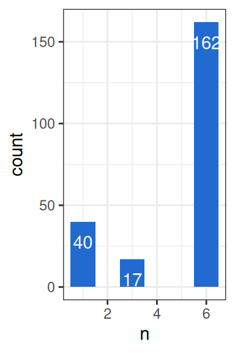
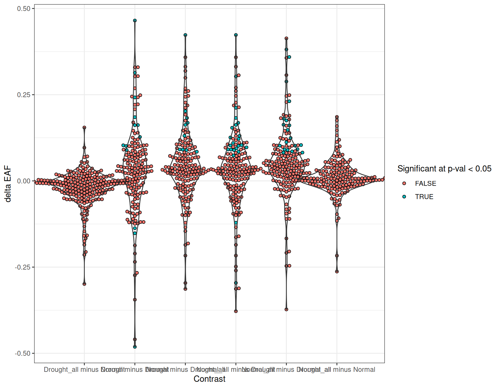
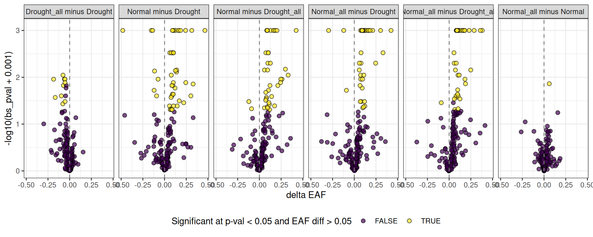
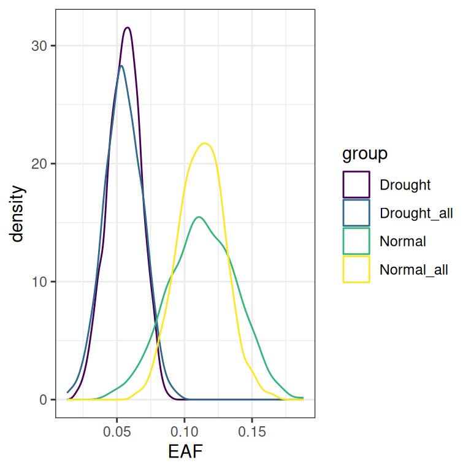
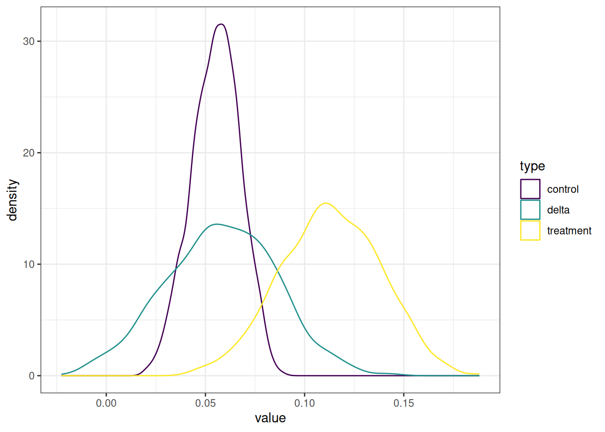

Background
What is delta EAF?
Delta EAF quantifies the difference in isotope incorporation between two experimental treatments at the feature level. Standard EAF analysis yields a single per-feature value per comparison, with confidence intervals derived from bootstrap resampling. When comparing treatments directly — “does this feature incorporate more label in Treatment A than Treatment B?” — those point estimates alone are insufficient for inference. Delta EAF addresses this by using the same bootstrap resamples already computed during EAF calculations to build a distribution of pairwise differences, from which a confidence interval and p-value can be derived.
Terminology
Note: Throughout this vignette, a comparison refers to a specific pairing of labeled and unlabeled sources — one EAF calculation. A contrast refers to the comparison of two comparisons: which is the treatment and which is the control. A group is the label assigned to a comparison. The delta is always calculated as \(treatment - control\), so positive values indicate higher incorporation in the treatment.
Building a comparison list
The delta EAF functions require a named list of qsip_data objects — one per comparison group. Each group runs its own independent filtering and EAF calculations, so the same feature may pass in one group but not another. Here, we build four comparison groups: Normal and Drought each paired against their matched 12C sources, and both again paired against all 12C sources.
q <- tribble(
~group, ~unlabeled, ~labeled, ~min_unlabeled_sources,
"Normal", "S149, S150, S151, S152", "S178, S179, S180", 3,
"Drought", "S161, S162, S163, S164", "S200, S201, S202, S203", 3,
"Normal_all", "12C", "S178, S179, S180", 6,
"Drought_all", "12C", "S200, S201, S202, S203", 6
) |>
run_comparison_groups(example_qsip_object,
allow_failures = TRUE,
seed = 41
)
#> Finished groups ■■■■■■■■■ 25%
#> Finished groups ■■■■■■■■■■■■■■■■ 50%
#> Finished groups ■■■■■■■■■■■■■■■■■■■■■■■ 75%
#> Finished groups ■■■■■■■■■■■■■■■■■■■■■■■■■■■■■■■ 100%
#> Because delta EAF requires a feature to have an EAF value in both groups of a contrast, features that pass filtering in one group but not another cannot be used for that contrast. get_overlap_sizes() counts how many features are shared across groups (Table 1), and an upset plot gives a visual breakdown of the overlaps (Figure 1).
overlaps = get_overlap_sizes(q)| group1 | group2 | overlapping_features |
|---|---|---|
| Drought | Drought_all | 211 |
| Drought | Normal | 162 |
| Drought | Normal_all | 173 |
| Drought_all | Normal | 168 |
| Drought_all | Normal_all | 179 |
| Normal | Normal_all | 170 |
lapply(q, get_EAF_data) |>
bind_rows(.id = "group") |>
filter(is.na(resample)) |>
select(group, feature_id) |>
summarize(group = list(group), .by = feature_id) |>
ggplot(aes(x = group)) +
geom_bar() +
ggupset::scale_x_upset() +
geom_bar(fill = "#216AD0") +
geom_text(stat='count', aes(label=after_stat(count)), vjust=-0.3, color = "gray30")
Delta EAF
Identify the contrasts
To run the delta EAF calculations, you must first define your contrasts. If you don’t define the contrasts up front the function will do an all-by-all comparison, but this may not be ideal because 1) not all contrasts are meaningful, and 2) you can’t determine which is the treatment and which is the control. At a high level, the delta is the difference in resampled EAF distributions between the treatment and the control — calculated as \(treatment - control\) — so positive values indicate higher EAF in the treatment and negative values indicate higher EAF in the control. Knowing which group plays which role is critical for interpretation.
The make_delta_EAF_contrasts() will make a tibble of contrasts for you from your qSIP2 list object, again in an all-by-all format and with treatment/control pairings that may or may not be what you want (Table 2).
contrasts = make_delta_EAF_contrasts(q)| control | treatment | contrast |
|---|---|---|
| Drought | Drought_all | Drought vs Drought_all |
| Drought | Normal | Drought vs Normal |
| Drought | Normal_all | Drought vs Normal_all |
| Drought_all | Normal | Drought_all vs Normal |
| Drought_all | Normal_all | Drought_all vs Normal_all |
| Normal | Normal_all | Normal vs Normal_all |
For example, it is interesting to compare the drought to normal, and maybe each of those treatments against their “_all” counterpart… but perhaps the “Drought vs Normal_all” and “Drought_all vs Normal” contrasts aren’t that useful. Additionally, you may not like the default contrast names which goes under the format of control vs treatment. To fix both of these issues, you can do an inline filter() and mutate() to get the contrasts exactly how you want it (Table 3).
contrasts = make_delta_EAF_contrasts(q) |>
dplyr::filter(!contrast %in% c("Drought vs Normal_all", "Drought_all vs Normal")) |>
mutate(contrast = paste(treatment, control, sep = " minus "))| control | treatment | contrast |
|---|---|---|
| Drought | Drought_all | Drought_all minus Drought |
| Drought | Normal | Normal minus Drought |
| Drought_all | Normal_all | Normal_all minus Drought_all |
| Normal | Normal_all | Normal_all minus Normal |
Run delta EAF contrasts
The run_delta_EAF_contrasts() function takes our qSIP2 list object (and optional contrasts) and generates a tibble with a line of output for each feature_id in each contrast. Since we already have a contrasts file, we can provide it. If we left it empty, then it would generate the same contrasts as the base make_delta_EAF_contrasts() function. We also give it the confidence level of 95%.
delta_EAF = run_delta_EAF_contrasts(q,
contrasts = contrasts,
confidence = 0.95)
#> ℹ Confidence level = 0.95
#> step 2/2: summarizing delta statistics ■■■■■■■■■■■■■■■■■■■■■■■■■ 81% | …
#> ! there were 74 contrast and 127 bs_pval result messagesThe output includes two warnings — “74 contrast” and “66 bs_pval” — which are addressed in turn. The contrast warning indicates that 74 features could not have a delta EAF calculated for all contrasts, because they were filtered out of one or both groups used in a given contrast. With 4 contrasts, each feature would normally produce 4 rows, but features missing from any group will have fewer. Figure 2 shows that 162 features appear in all 4 contrasts, 40 appear in only one, and 17 appear in only two.

The 17 features appearing in two contrasts each contribute two failed contrasts, giving 17+17+40 = 74. The message is printed once per successful contrast — so for ASV_167, which had two successful and two failed contrasts, the same message appears twice. This is intentional: when viewing either successful row for that feature, the message makes clear that not all contrasts succeeded.
| feature_id | contrast_message |
|---|---|
| ASV_167 | skipped 2 missing contrast(s): Normal minus Drought, Normal_all minus Normal |
| ASV_167 | skipped 2 missing contrast(s): Normal minus Drought, Normal_all minus Normal |
Note: Warnings are only generated for features that appear in at least one contrast. A feature present in only one group — and therefore not valid in any contrast — will be absent from the output table entirely and will not generate a warning.
Inspecting results
The results are stored in the delta_EAF dataframe, with one row per feature per contrast. ASV_10 is a useful example because it reaches significance in some contrasts but not others.
Example feature: ASV_10
ASV_10 = delta_EAF |>
filter(feature_id == "ASV_10")| feature_id | contrast | delta | lower | upper | sd | bs_pval | bs_pval_message | pval | contrast_message |
|---|---|---|---|---|---|---|---|---|---|
| ASV_10 | Drought_all minus Drought | -0.0004450 | -0.0265342 | 0.0265701 | 0.0139587 | 0.940 | NA | 0.9745663 | NA |
| ASV_10 | Normal minus Drought | 0.0574224 | 0.0025274 | 0.1122189 | 0.0277423 | 0.040 | NA | 0.0384665 | NA |
| ASV_10 | Normal_all minus Drought_all | 0.0583124 | 0.0144726 | 0.1051709 | 0.0226059 | 0.004 | NA | 0.0098938 | NA |
| ASV_10 | Normal_all minus Normal | 0.0004449 | -0.0438587 | 0.0455810 | 0.0231538 | 0.956 | NA | 0.9846679 | NA |
Two of the 4 bs_pval p-values (explained below) are “significant”, and two are not. Interestingly, the non-significant values come from contrasts comparing the “in-treatment” unlabeled sources vs. using “all-treatment” unlabeled. So, although they did give different EAF values, they were not deemed significantly different via the delta EAF method.
The two significant differences are between both types of Drought vs Normal comparisons, with Normal having higher EAF than Drought for this feature. The bs_pval calculation is explained further below, but briefly: the null hypothesis is that the true delta EAF is approximately zero, and these two contrasts provide evidence against that.
Note: The output contains two p-values.
bs_pvalis a bootstrap percentile p-value derived directly from the empirical distribution of resampled delta values — it asks what proportion of the bootstrap deltas fall on each side of zero and computes a two-sided p-value from that.pvalis a Wald z-test calculated as \(2 \times \Phi(-|\Delta / \text{SD}|)\), where \(\Delta\) is the observed delta EAF and \(\text{SD}\) is the standard deviation of the bootstrap delta distribution.bs_pvalis recommended for most purposes: the distribution of resampled deltas can be non-normal, particularly with few replicates, andbs_pvalmakes no parametric assumptions.pvalis retained as an alternative for cases where a parametric test is preferred.
A more global look
Plotting the delta values for each contrast together shows that most features cluster near zero, indicating little difference in incorporation between treatments (Figure 3). But in some cases there are clear global shifts — for example, Normal_all appears to have more overall enrichment than Drought_all.

Volcano plots
One way to show this data that fits intuitively with transcriptomics results is the volcano plot. Similar to transcriptomes, the x-axis displays the difference in EAF values (as opposed to expression differences) with point to the right of the line being higher in the control, and to the left of the line being higher in the treatment. The y-axis displays the “significance”, here as the negative log10 of bs_pval.
sig_pval = 0.05
eaf_diff = 0.05
delta_EAF |>
mutate(sig = case_when(
abs(delta) >= eaf_diff & bs_pval < sig_pval ~ TRUE,
.default = FALSE
)) |>
ggplot(aes(x = delta, y = -log10(bs_pval+0.001))) +
geom_point(aes(fill = sig), pch = 21, size = 2, alpha = 0.7) +
facet_wrap(~contrast, nrow = 1) +
expand_limits(y = 3.1) +
theme(legend.position = "bottom") +
scale_fill_viridis_d() +
geom_vline(xintercept = 0, linetype = "dashed", color = "gray50") +
labs(x = "delta EAF",
fill = paste0("Significant at p-val < ", sig_pval, " and EAF diff > ", eaf_diff))
bs_pval error message
The delta EAF output includes two message columns. The contrast_message column was covered above; bs_pval_message is explained here.
Because calculating delta requires pairing the EAF values based on their resample number, this can fail in two cases.
The first is simply if the two groups did a different number of resamples, say 1000 in group A and 500 in group B, then obviously we can only pair up resamples 1-500 and have to skip 501-1000 for group A.
The second case is when we use allow_failures = TRUE during the resampling step (see the resampling vignette). Here, although there may be 1000 resamples in both groups, there may be sporadic NA values filled in when the resampling failed.
| feature_id | contrast | bs_pval | bs_pval_message |
|---|---|---|---|
| ASV_34 | Normal minus Drought | 0.0129450 | Removed 691 NA bootstrap replicate(s) of 1000 (69.1%) |
| ASV_117 | Drought_all minus Drought | 0.6761364 | Removed 648 NA bootstrap replicate(s) of 1000 (64.8%) |
| ASV_55 | Normal minus Drought | 0.2392027 | Removed 699 NA bootstrap replicate(s) of 1000 (69.9%) |
The bs_pval_message records how many resamples were skipped because a pairwise delta could not be computed.
The delta EAF calculations
The delta EAF calculations reuse the same bootstrap distributions already computed during EAF calculations. Within each qsip_data object, every feature has a collection of resampled EAF values accessible via get_EAF_data(). The resample column identifies each bootstrap iteration; the observed (non-resampled) value is stored with resample = NA and can be excluded. Below, the 1000 resampled EAF values for ASV_10 are retrieved across all four comparison groups.
Resampled EAF distributions
ASV_10_EAF = get_EAF_data(q) |>
filter(feature_id == "ASV_10") |>
filter(!is.na(resample))| group | feature_id | resample | W_lab_mean | W_unlab_mean | observed | Z | G | M | atom_count | M_labeledmax | M_labeled | EAF |
|---|---|---|---|---|---|---|---|---|---|---|---|---|
| Drought | ASV_10 | 1 | 1.715289 | 1.711749 | FALSE | 0.0035398 | 0.7866661 | 308.0812 | 9.606667 | 317.6634 | 308.7183 | 0.0657490 |
| Drought_all | ASV_10 | 1 | 1.715289 | 1.713751 | FALSE | 0.0015377 | 0.8106425 | 308.0931 | 9.594679 | 317.6634 | 308.3695 | 0.0285640 |
| Normal | ASV_10 | 1 | 1.718697 | 1.712044 | FALSE | 0.0066530 | 0.7902033 | 308.0829 | 9.604898 | 317.6634 | 309.2802 | 0.1235757 |
| Normal_all | ASV_10 | 1 | 1.718697 | 1.712218 | FALSE | 0.0064790 | 0.7922873 | 308.0840 | 9.603856 | 317.6634 | 309.2498 | 0.1203445 |
| Drought | ASV_10 | 10 | 1.715232 | 1.712508 | FALSE | 0.0027240 | 0.7957565 | 308.0857 | 9.602122 | 317.6634 | 308.5757 | 0.0505972 |
| Drought_all | ASV_10 | 10 | 1.715232 | 1.711489 | FALSE | 0.0037433 | 0.7835503 | 308.0796 | 9.608225 | 317.6634 | 308.7535 | 0.0695262 |
| Normal | ASV_10 | 10 | 1.718697 | 1.711796 | FALSE | 0.0069010 | 0.7872345 | 308.0815 | 9.606383 | 317.6634 | 309.3235 | 0.1281786 |
| Normal_all | ASV_10 | 10 | 1.718697 | 1.713259 | FALSE | 0.0054378 | 0.8047561 | 308.0902 | 9.597622 | 317.6634 | 309.0680 | 0.1010105 |
Plotting those values on a density plot shows the overall shape of the 4 distributions. Remember, each feature will have its own distribution shape.

Delta distributions
The first step in calculating the delta value is constructing the resampled delta distribution for each contrast. This is done by pairing resample 1 from the treatment with resample 1 from the control, then resample 2, and so on, producing a distribution of delta EAF values with length equal to the smaller of the two distributions. Delta is always calculated as treatment - control.
| contrast | resample | treatment | control | delta |
|---|---|---|---|---|
| Normal minus Drought | 1 | 0.1235757 | 0.0657490 | 0.0578267 |
| Normal minus Drought | 2 | 0.1439361 | 0.0311198 | 0.1128163 |
| Normal minus Drought | 3 | 0.1069522 | 0.0637726 | 0.0431796 |
| Normal minus Drought | 4 | 0.0889793 | 0.0579187 | 0.0310606 |
| Normal minus Drought | 5 | 0.1104417 | 0.0550439 | 0.0553978 |
| Normal minus Drought | 6 | 0.1467758 | 0.0265535 | 0.1202223 |
| Normal minus Drought | 7 | 0.1399850 | 0.0548018 | 0.0851831 |
| Normal minus Drought | 8 | 0.0797960 | 0.0690198 | 0.0107762 |
| Normal minus Drought | 9 | 0.1438040 | 0.0594652 | 0.0843387 |
| Normal minus Drought | 10 | 0.1281786 | 0.0505972 | 0.0775814 |

In Figure 6, the green line represents the delta EAF distribution, which is the yellow line minus the purple line. This delta distribution is still literally just the final EAF values from the control group subtracted from the treatment group, but the confidence intervals and bs_pval are derived from this distribution of delta values. The 95% CI has the value for the 2.5% and 97.5% values in the distribution.
Conclusion
Delta EAF extends the standard EAF workflow by leveraging existing bootstrap resamples to test whether isotope incorporation differs meaningfully between experimental treatments. The make_delta_EAF_contrasts() and run_delta_EAF_contrasts() functions provide a flexible way to define and run contrasts, and the bs_pval and confidence intervals give a principled basis for interpretation. For studies with the necessary data, the growth vignette covers an additional workflow step for estimating per-capita growth rates.